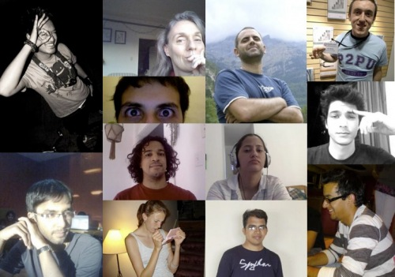

This is the P2PU Archive. If you want the current site, go to www.p2pu.org!
School of Webcraft - Welcome!
Mozilla and P2PU teamed and created the School of Webcraft, a powerful new way to teach and learn web developer skills. School of Webcraft courses are 100% free, globally accessible, and powered entirely by learners and mentors like you.
P2PU, the home of School of Webcraft is moving to a new platform. Check it out!
On the new site you can sign-up for open study groups and volunteer to help improve those which are under development. If you can't find the study group to suit your needs, you can create your own study group to run within School of Webcraft!

Get involved:
- Create a learning project. Use this form to suggest your project idea.
- Participate in a project. Help others develop their courses and study groups and start learning.
-
Frequently Asked Questions
- Learn more. Learn more about the School of Webcraft's vision and roadmap.
- Get the latest news. Find the latest updates on the Planet Webcraft blog.
- Subscribe to our Announcement List. Receive specific announcements and calls to action.
- Get Involved! Introduce yourself or offer your assistance through the School of Webcraft discussion list.
Course list
| Course Name | Organiser | Course Status |
|---|---|---|
|
Javascript: 101This course will cover basic concepts of Javascript programming and the DOM (document object model) Go to the course page Update: We have created a course website to organize this course over the next 6 weeks. Javascript began as a language to program web pages, but now it has become much more than that. There are server side frameworks for creating entire applications in Javascript, and testing frameworks which allow us to write scripts in Javascripts, and the original intent of creating dynamic web pages with Javascript as well. The course content will consist of a series of video talks delivered by Douglas Crockford on Javascript programming. I have orgamized these videos in the form of a course on this website. The basic process of learning and participation will be as follows: The blog posts and assignments uploaded on open source repositories will become your "proof of learning". Course Schedule: Week 1:
Week 2 Week 3 Week 4
Week 5
Week 6
|
Parag Shah |
Completed |
|
Introduction to DrupalThis is a pilot test of a Self-study Course: Introduction to Drupal. Admissions are closed for the testing phase. Go to the course page Summary: Free 6 week self-study course to learn about Drupal. Week- by-week emails to help motivate you and organize your learning experience. Think of it as a book-club for free learning materials about Drupal. Acknowledgements What is this course about? Problem: What is Drupal? What can it do? Drupal is peculiar, the features which make it powerful and different from other systems, also make it difficult to grasp. There are excellent resources out there, but a novice user can get google-itis from searching through material which isn’t at the right level, shows out dated practices, or is not up to date. This course will be a self-study introduction to take people on a rolling basis through the course. How it works: Each week, you login to the site which contains 2-3 hours of selected self-study videos, tutorials and materials to work through. You will also get access to a recorded webinar* discuss the materials. Login to P2PU.org to discuss each weeks materials with fellow students. Acquia partner Web Enabled are offering a push-button hosting environment as an option for new users to learn on and try out some advanced features of Drupal. * The first time it is run, a LIVE webinar is held so guest guides can answer learner questions- “What kinds of problems and questions did they find?” to talk about that weeks learning materials. These are recorded, and when students work through the course later, they watch the recorded webinars. Each week:
|
Heather James | Completed |
|
Programando web con PHP¿Te animas a empezar a programar con el lenguaje más popular en la web? aprendamos juntos #PHP Go to the course page PHP es hoy el más popular de los lenguajes de programación en la web, fácil de aprender y altamente productivo, lo que lo ha convertido en la base de miles de sitios masivos en Internet - por ejemplo Wikipedia, Facebook - y decenas de proyectos de software libre programados en PHP, como Wordpress, Moodle, Drupal, Mediawiki, Joomla, World wide web. Arquitectura cliente-servidor. Páginas estáticas y dinámicas. |
Martin Olivera |
Completed |
|
From GIMP to xHTML and CSSCreate a website in xHTML and css: make a design in GIMP, slice it, code it. Go to the course page
Contents
|
Wouter Cox |
Completed |
|
Learning Web UI AutomationLearn how to automate web applications by driving real browsers Go to the course page This course will give a good grounding on using the Selenium Web Application Testing Framework. Selenium is a popular tool used by the top web companies like Google, Mozilla, Microsoft and many more. By the end of the course, participants will have the confidence to automate most web applications. This will then give you the confidence that your application works as it is intended. |
David Burns |
Completed |
|
Dive into PythonThis course closely follows Mark Pilgrim's "Dive into Python" book, and is designed for experienced programmers. Go to the course page This course is based on the book Dive into Python by Mark Pilgrim and is freely available. You can either choose to download the .zip file containing the .pdf and associated files, or you can read the book online. Please note for non-native speakers of English that the book may have been translated into your native language. Dive into Python is meeting on the forums only. |
M. Volz |
Completed |
|
Web Browser Extension Dev.Would you like to know how to develop a web browser extension? Go to the course page They will learn how to build packages (web browsers) from source. Participants will be involved in various project, such as UI enhancement and protocol integration. In addition, as part of their work, they will individually create an extension or work on existing issues/bugs. Although participants can use their choice browsers, explanations and practical examples will be based on the Mozilla Framework. What you can expect to learnTo mention a few, there include the followings.
|
micadeyeye |
Completed |
|
Drupal Social Web ApplicationLearn to use Drupal to build a social web app that lets users collaborate on projects and ideas. #webcraft #p2pu Go to the course page A thread about Open Hippel was started on Groups.Drupal.org back in April 2010 - http://groups.drupal.org/node/59918#comment-248839 Course summary also on https://wiki.mozilla.org/Drumbeat/p2pu/courses/socialwebdrupal
So far, TEDxTokyo Innovators Hub and K. International School are two of our biggest supporters, and Keio University had made it an official school project, which means students can be credited for working on it! My plan is to open the development of this Open Hippel platform up as a course. We'll have hands on development classes, (we need some Drupal gurus from Acquia to help out on this!) The course work will be documented and with the help of Keio students, translated into Japanese. By the end of the course, the whole "book" will be available online under CC license. In learning, it is far better to have a project that is real and has impact on the real world! Just like Stanford's project on Extreme Affordability products, students are far more engaged when they're working on real world projects. I think Open Hippel can similarly be that engaging project at P2PU. |
Nicholas Wang |
Completed |
|
WordPress DevelopmentWant to learn all about WordPress Development including plugins, widgets, WordPress as CMS, Custom Post Types and Custom Taxonomies? Go to the course page WordPress has been gaining on the CMS marketshare and even won the Overall Best Open Source CMS Award in 2009. It has a great community behind it (and a growing one as well) and there is a lot of interest and enthusiasm on how to leverage WordPress on different scenarios. Course Modus Operandi Each week:
* Monday: Students receive by email the assignment for the week. http://bit.ly/fe4stz <------- Assignment Results At the end of the course I will post how many challenges you did and how you did on each one. Good luck and enjoy! |
Nuno Morgadinho |
Completed |
|
Introduction to Ruby and RailsLooking for a web framework that's optimized for programmer happiness and sustainable productivity? Learn Ruby and Rails! #webcraft #p2pu Go to the course page Ruby is a fascinating object-oriented language suited for many purposes. Rails is a popular web framework for Ruby. This course will introduce the Ruby programming language, focusing on those features and concepts that will be important when developing web-based, database-backed Rails applications. Course participants will learn with freely available web resources and by completing small assignments. Participants will also create a simple web application individually or in small groups. Because this course will cover a lot of ground, it will be completed over 10 weeks. |
Andy Lindeman |
Completed |
|
Web 200: Anatomy of a RequestWhat happens when you click go in the browser? Find out in "Web 200: Anatomy of a Request" at #p2pu. http://bit.ly/c4AYU4 Go to the course page In this six week course we'll do a deep dive into what happens when you click go in your browser. That's the entire focus of the course. Participants will be given reading assignments and videos to watch in advance of weekly synchronous meetings. In the meetings we'll answer questions and discuss the way things work. The most fundamental concept in this course is that the web is abstracted into layers, we're going to learn how and why. |
John Britton |
Completed |
|
Online Maps with OpenLayersHow do free and open maps compete with companies such as Google? Make maps and design geo-mashups with HTML and JavaScript. Go to the course page Online maps are a rapidly growing technology. The unique connection of maps to real world information has given open and crowdsourced maps some advantages over even the best-funded companies. A Map Making and Programming Class Topics * OpenLayers.org, a free and open source JavaScript library, will be used to explore the basics of adding maps to web pages. This experience gives you the know-how to use map APIs from Google, ESRI, Microsoft, or CloudMade (these alternatives will be part of a group discussion) * Applications of maps, including open source solutions for business, disaster response, open government, and the environment, will be discussed. Participants choose a research topic. * A final 'interest project', chosen by the participant, will be a web map which displays real-world data and produces an informative, interactive, artistic, and/or persuasive online experience. |
Nick Doiron |
Completed |
|
User Experience Design | ENG PT ESPHow to improve human-computer interaction and accessibility using UX and Interaction design principles? Go to the course page SUBSCRIPTIONS ARE CLOSED! THANKS! [EN] Welcome to User Experience Design! This course will be run in English, Portuguese and Spanish simultaneously. Please read the "Sign-up Task" for more information about the selection process. ---- [EN] This course is focused on exploring basic concepts and definitions of User Experience & Interaction design. Discussions and reading recommendations, together with analytical and practical activities will be used as a methodology. Due to the intrinsic multidisciplinary characteristic of the Design field, all kinds of professionals and students are welcomed. Also, as a recommendation of this semester's Webcraft program, some Accessibility concepts will be discussed. [PT] Este curso se orienta a explorar conceitos e definições básicas acerca de Design de Experiência de Usuário e Interação. Discussões e recomendações de leitura, junto a atividades analíticas e práticas serão usadas como metodologia. Devido a característica multidisciplinar intrínseca ao Design, todos os profissionais e estudantes são bem-vindos. Também, por recomendação do programa deste semestre da escola de Webcraft, alguns conceitos de Acessibilidade serão discutidos. [ES] Este curso se orienta a explorar los conceptos básicos y definiciones del diseño de Experiencia de Usuario y de Interacción. Como metodología de aprendizaje se llevarán a cabo debates y recomendaciones de material de lectura, junto a actividades prácticas y analíticas. Debido al carácter multidisciplinar intrínseco del campo de Diseño, son bienvenidos todos los profesionales y estudiantes. A su vez, como recomendación del programa Webcraft de este semestre, se discutirán algunos conceptos de Accesibilidad. |
João Menezes |
Completed |
|
Beginning Python WebservicesWant to learn about the protocol that runs the web (HTTP) and how to make web services with Python? #webcraft #p2pu Go to the course page Python (http://www.python.org) is a powerful, high-level programming language that is easy to learn and easy to make highly customizable web-sites and play with web technologies. While for many enterprise-class sites, a complicated stack of technologies and integrated web frameworks may be required to achieve complex goals, using python and WebOb (http://pythonpaste.org/webob/) -- a basic request/response object -- allows a first-principles approach to understand the HTTP protocol and making a wide variety of web sites in a flexible manner. The course will center on using python and associated technologies to explore how HTTP and HTML works. Only the basics will be covered, but this should be enough to point newcomers with the predisposition towards making and debugging more complex sites. Students will create web services that include hosting static content, persisting data using the filesystem, middleware, generating dynamic server responses, and using a template language (genshi). The basics of REST and good architecture will be introduced covering the basics of how to view programming and good architectural design. From https://wiki.mozilla.org/Drumbeat/p2pu/courses/pythonwebservices Course material: |
Jeff Hammel |
Completed |
|
jQuery ~ For the Love of DollarIntermediate Level Course Covering jQuery API, Open Source Tools and jQuery Community Resources Go to the course page jQuery is a cross-browser JavaScript library that simplifies client-side scripting of HTML (HyperText Markup Language) pages using CSS (Cascading Style Sheets) based selectors to select, style and manipulate page elements. jQuery additionally offers superb support for DOM traversal, event handling, visual effects, animation, AJAX (Asynchronous JavaScript and XML) and much more. With a vibrant community for support, jQuery also has an enormous plugin repository for added functionality and a fantastic user interface library of widgets which can be simply inserted into your web page and easily configured. This course will use Rebecca Murphey's open source ebook "jQuery Fundamentals" [1] and Ben Nadel's video series entitled "An Intensive Exploration of jQuery" [2] as our primary learning resources. For examples, demos and assignments we will use collaborative tools such as jsfiddle [3] and FireFox browser add-ons such as FireBug [4] and FireBug extensions [5]. Rather than extensively covering every aspect of the jQuery API and plugins, the course will have a emphasis on learning jQuery in a participatory environment using jQuery community resources and free tools such as jsfiddle and FireBug. Although the majority of the course communications will take place through group email, we will attempt to use a conferencing tool such as TalkShoe [6] (participate via dial in or client software) to hold a few live conferences. [1] jQuery Fundamentals by Rebecca Murphey [2] An Intensive Exploration Of jQuery by Ben Nadel [3] jsFiddle by Piotr Zalewa [5] Firebug Extensions [6] TalkShoe |
Dan Diebolt |
Completed |